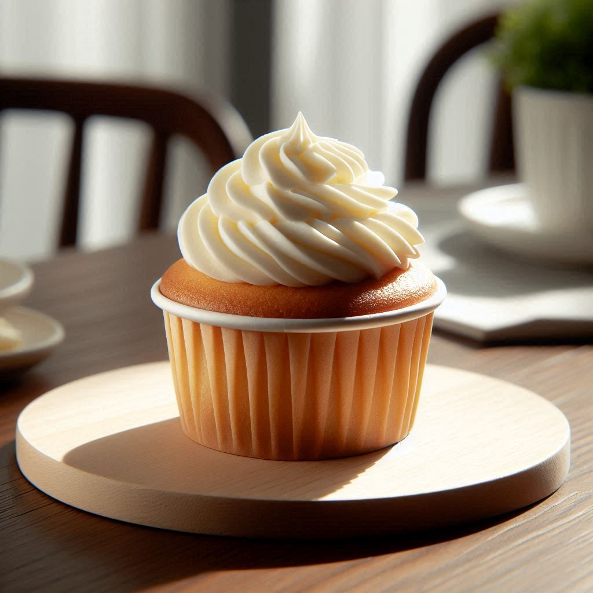
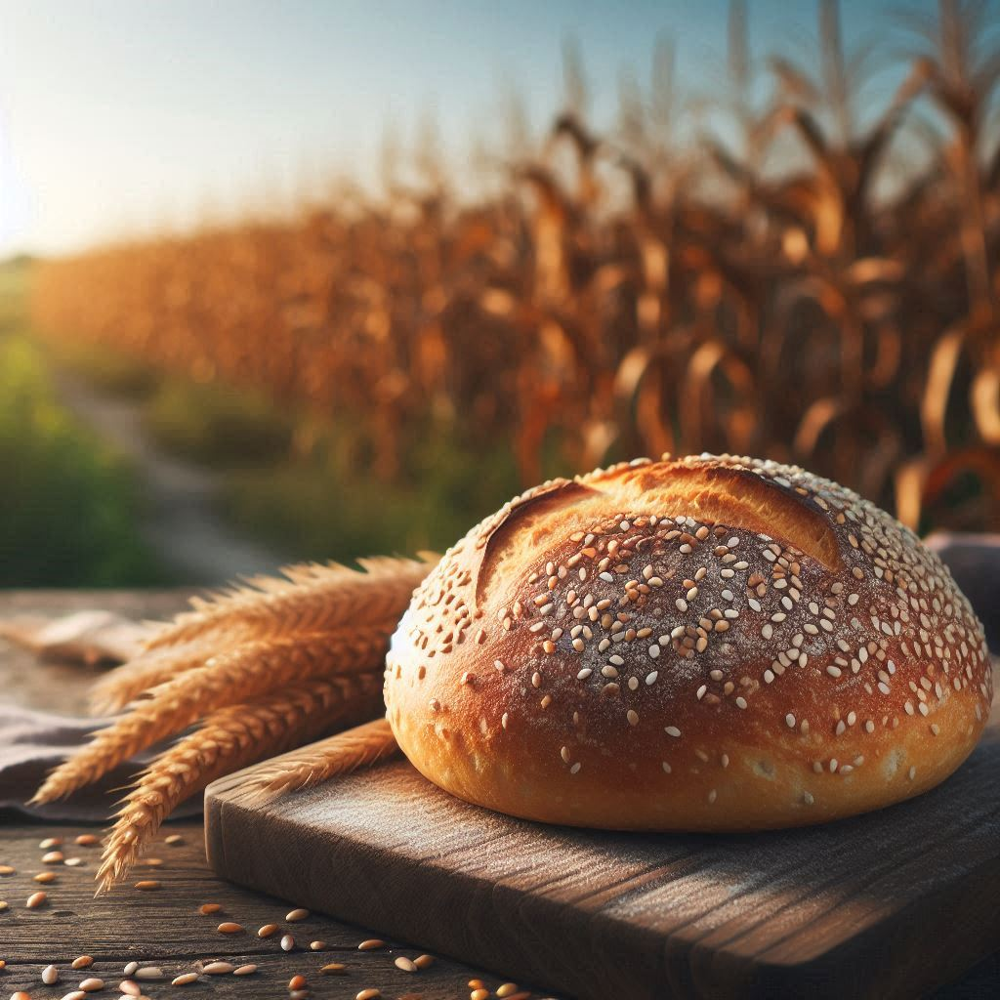
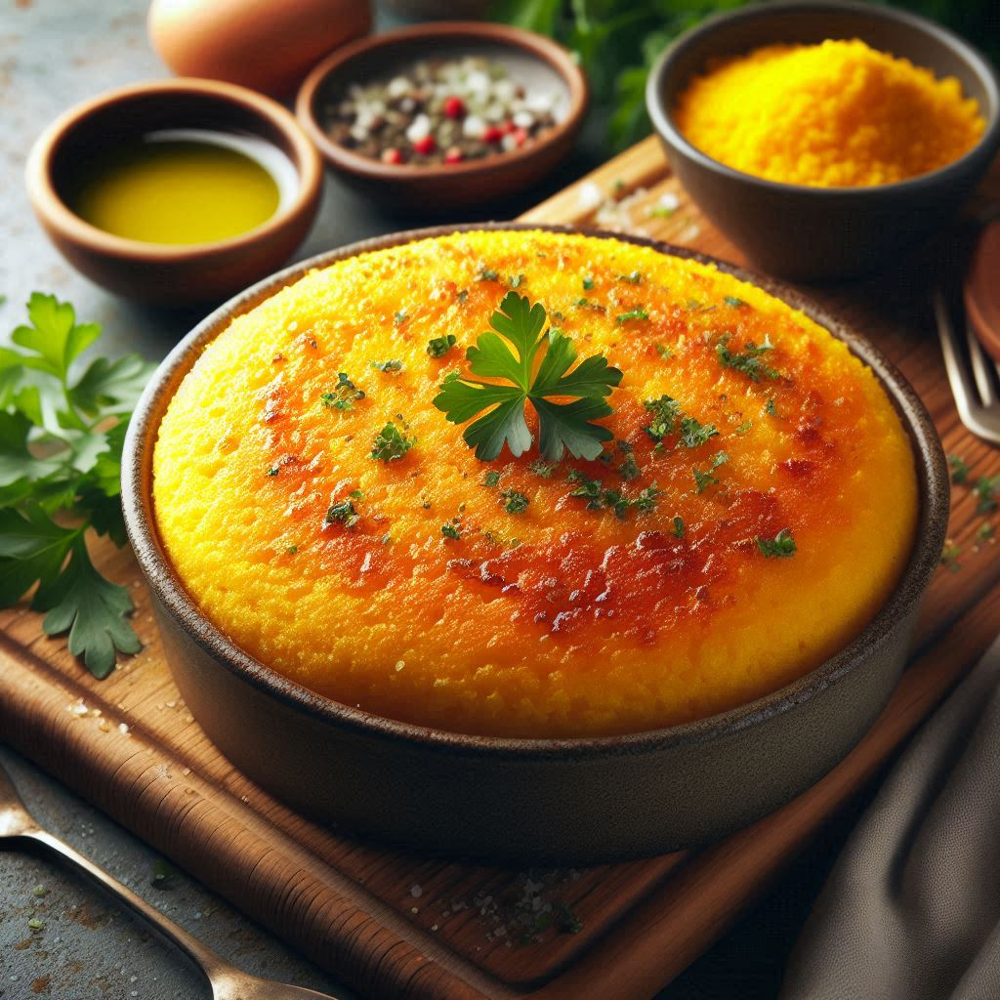

"Tu eliges la vida que quieres vivir"
Sobre Nosotros
Somos una empresa productora de alimentos a base de maíz, libres de gluten y azucares añadidos enfocándonos en ofrecer alternativas para una alimentación saludable.
Nuestros Productos
MUFFIN
Descubre el delicioso sabor de nuestros muffins de maíz, cuidadosamente elaborados para satisfacer tus antojos sin comprometer tu salud. Estos muffins son:
100% Libres de Gluten,sin azúcares añadidos e ingredientes Naturales.
PAN
Disfruta de la auténtica tradición del pan de maíz con un toque saludable. Nuestro pan de maíz es:
100% Libre de Gluten, sin azúcares añadidos e ingredientes Naturales.
POLENTA
Sumérgete en la tradición italiana con nuestra polenta, una opción saludable y deliciosa para tus comidas. Nuestra polenta es:
100% Libre de Gluten, sin azúcares añadidos, versátil y nutritiva.
